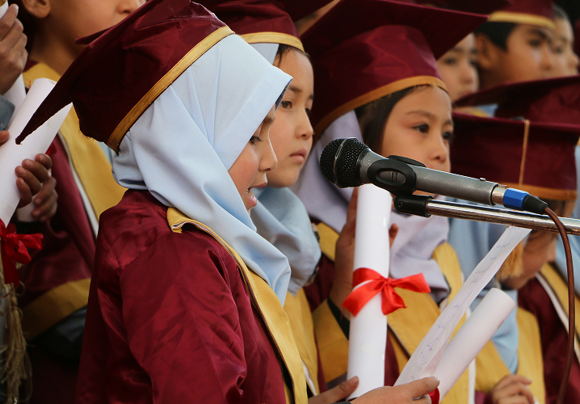
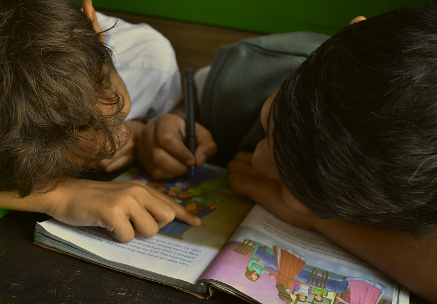
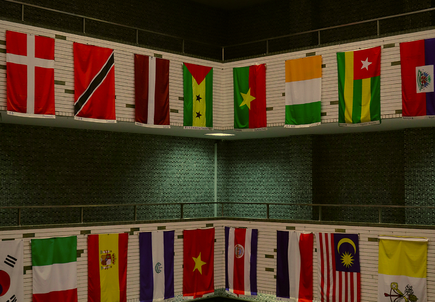
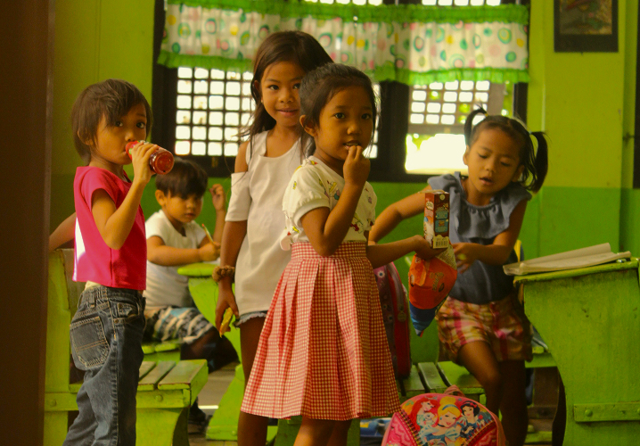
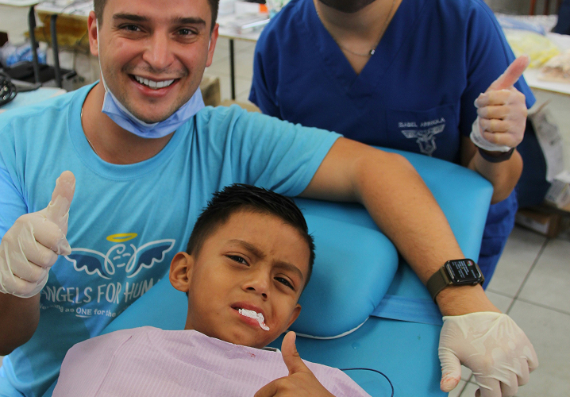
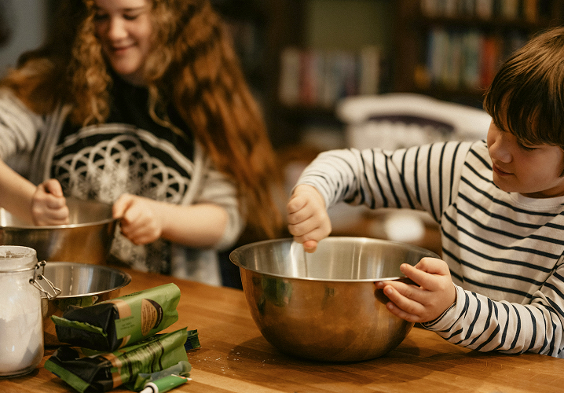

더불어 성장하는
배움공동체
사람이 있는 곳을 지원하며, 사람을 통해 사람을 키웁니다.
꿈장학사업
별을 품다,
꿈과 희망을 키우다.
-

리더육성 장학사업
재단 출신 꿈장학생 가운데 성장이 돋보이 학생을 선발하여 각 분야에서 리더로 성장 할 수 있도록 맞춤형으로 지원하는 사업
자세히 보기 -

멘토링
꿈장학사업청소년들을 멘토와 함께 선발하여 학생들이 멘토 선생님의 교육적, 정서적 지지를 받으면서 지원하는 사업
자세히 보기 -

글로벌 장학사업
교육적으로 지원하여 자국의 발전을 이끌 수 있는 글로벌 리더로 양성하는 사업
자세히 보기 -

배움터
교육지원사업교육지원이 부족한 아동, 청소년을 위하여 배움터들이 협력하여 교육복지 안전망을 구축할 수 있도록 지원하는 사업교육지원이 부족한 아동, 청소년을 위하여 배움터들이 협력하여 교육복지 안전망을 구축할 수 있도록 지원하는 사업
자세히 보기 -

청소년
치아교정 지원사업치아교정이 필요하나 가정형편으로 인해 적절한 치료를 받지 못한 청소년에게 대한치과교정학회의 후원으로 무료 치아교정의 기
자세히 보기
회를 제공하는 사업 -

특별사업
재단 장학생들에게 다양한 기회를 제공하고 사회전반에 교육복지 인식을 확산하고자,더 많은 아이들에게 교육복지 혜택을 지원
자세히 보기
하는 사업